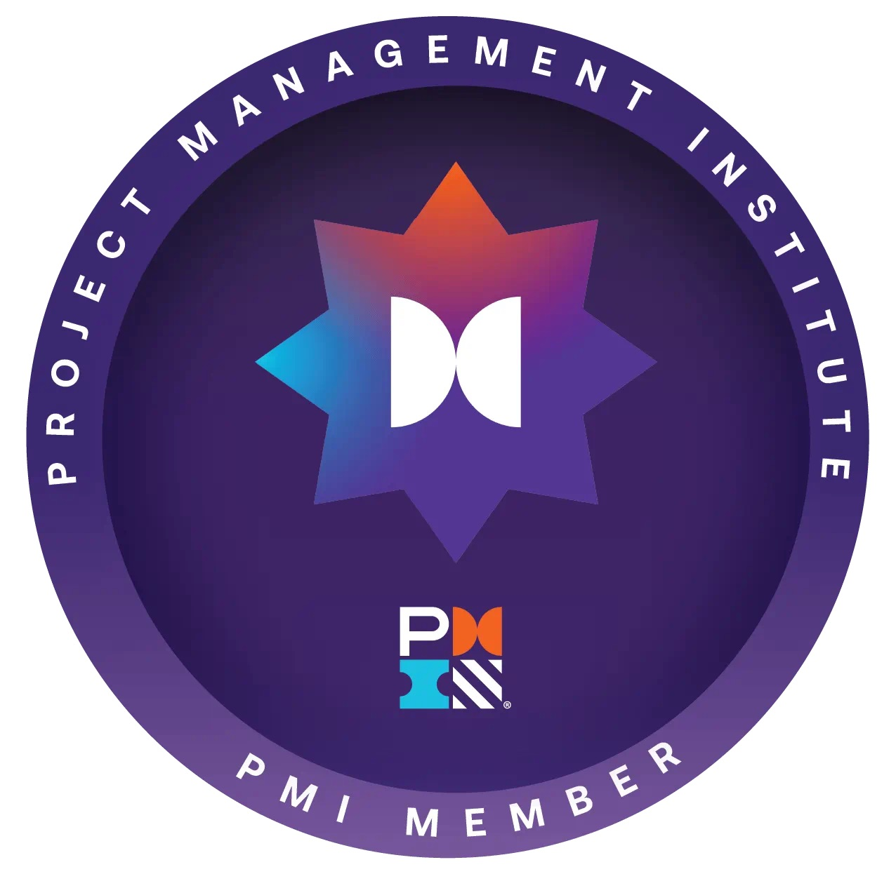

I am an aspiring Project Manager leveraging a strong foundation in bioinformatics and data-driven problem solving to lead cross-functional initiatives. In my current role as a Program Coordinator at the University of Guelph, I specialize in stakeholder communication, resource tracking, and aligning complex workflows with overarching organizational goals. With an analytical background and formal training through the University of Toronto’s Data Science Institute, I translate technical milestones into clear, actionable project roadmaps.
Certifications & Memberships

PMICore Competencies & Tools:
Project Lifecycle Management, Stakeholder Communication, Risk Assessment, Resource Allocation, Agile & Waterfall Methodologies, Jira, Trello, Confluence, Python, Excel, Git